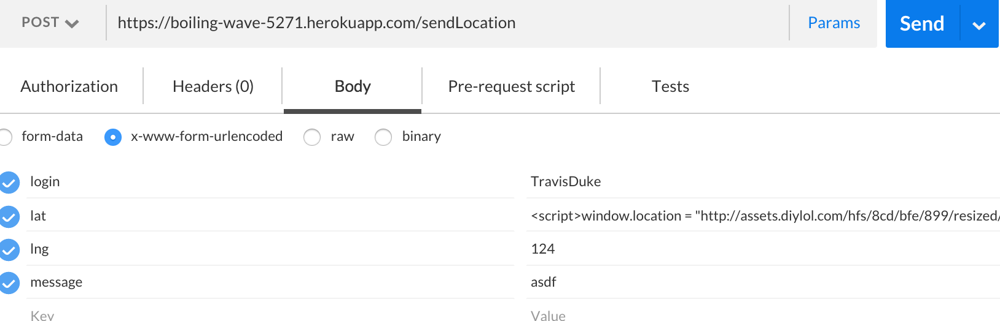
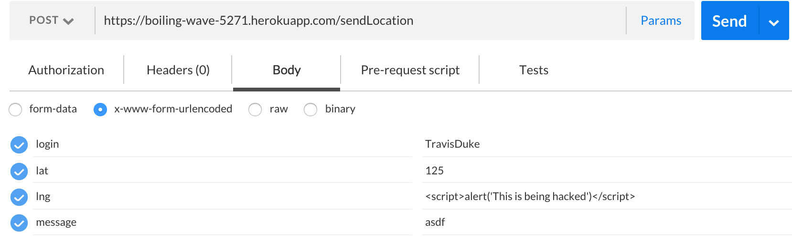
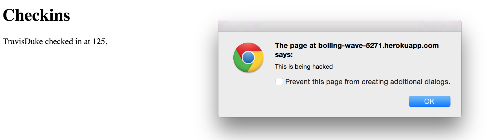

Introduction
My client's product, found at https://boiling-wave-5271.herokuapp.com, is set up to provide a message board for people on the system, recording their current position and the time that they posted. I, Scott Bettigole, have been hired to provide an analysis of the security issues in the product. I will look for and provide information about any and all security flaws I find, so that the program may be improved to lower security risks and prevent any future problems. I will offer potential ways to solve the issues found.
Methodology
To be able to post my own messages and location to the server, I used a program called Postman. This program allows me to post anything that I want, and it is up to the server to prevent anything malicious from being added to the database. I went through the different keyword requirements to post, and checked to see if I could enter malicious data into the client's database through malicious data in my post.
Abstract of Findings
I found three separate instances where the program was at risk of a cross-site-scripting attack. The issue is that users may input any data into the latitude, longitude, or message fields, and the program will not check whether or not the user's input is safe. The message board will accept all inputs, assuming that a correct login and all fields have some input, into the database. Then, when other users go to the message board, the page will respond and give users the entire database, including any malicious postings.
On the lat keyword in the database, you see below that I have entered in data that the server should not accept.

Now, instead of providing the message board, the malicious data I entered redirects the site to an image.
I then went and deleted those entries in the database to get it back to its original working condition. Next, I attempt to expose issues with the lng keyword in the database. As shown below, I try to post an alert that should not be accepted by the server.

However, the code I entered gets added to the database, and gives an alert to the screen, which can be seen by anyone who access the webpage.

Introduction - Provide a description of the product and what you were hired to do
Methodology - Describe your methodology pen testing the application, including the tools that you used
Abstract of Findings - Provide an overview of all the security and privacy issues you identified. This section should be written for non-technical managers who do not have technical expertise and do not have time to read the entire document. Write this section using lay language.
Issues Found - For each issue that you find, document:
Issue (e.g., database injection, really bad programming practice)
Location / page where issue was found
Severity of issue (e.g., low, medium , or high). Justify your answer.
Description of issue. How did you find it? A screenshot of problem is excellent.
Proof of vulnerability. Screenshots are important.
Resolution. Make recommendation(s) on how issue can be resolved. Show code if possible.
Conclusion - You can also list future considerations and recommendations with costs.